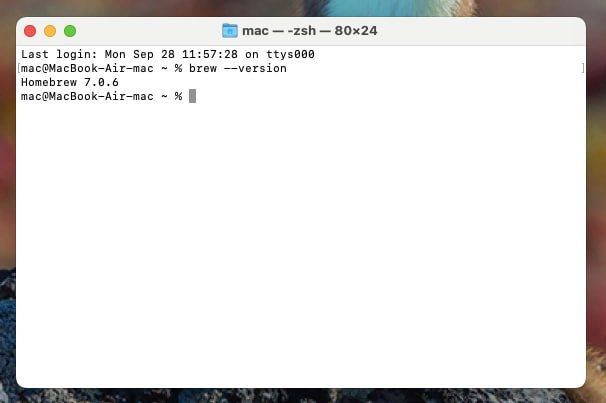
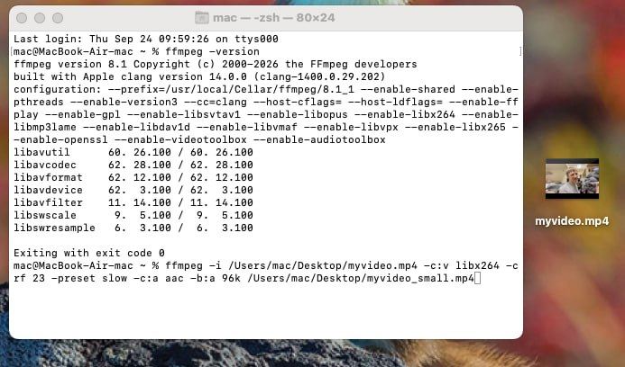

Небольшое дополнение для обладателей мака. Для вас способ с ffmpeg тоже возможен, и, более того, он будет более быстрым.
Для начала вам нужно открыть терминал.(У меня мака нет, но гугл подсказывает, что для этого нужна комбинация клавиш ⌘ Command + Space). Появится что-то вроде строки, в неё начните вводить слово "Терминал" или "Terminal" — скорее всего, полное слово появится с помощью подсказки. Жмём enter

Появится что-то похожее на это
Установка ffmpeg'а для вас пройдёт проще и быстрее, мы сделаем это через Homebrew. Для начала — проверяем, есть ли он у вас. Введите (копировать-вставить-enter) эту команду в терминал:
brew --version
Если будет какая-то ошибка — Homebrew не установлен. Если пишет версию — значит, он уже есть.
Тем, у кого Homebrew отсутствует, нужно установить его. Копируем-вставляем эту команду в тот же терминал:
Гугл пишет, что во время установки Mac может попросить у вас пароль от учётной записи и подтверждение установки, это нормально, просто следуйте подсказкам на терминале.
После установки вновь проверяем:
brew --version
Пишет версию — всё отлично:)
А теперь устанавливаем ffmpeg. Копируем-вставляем команду:
brew install ffmpeg
Запустится процесс установки, вы сразу поймёте, когда он завершится.
После этого вводим:
ffmpeg -version
Должно вывести версию ffmpeg'a.
Самая сложная часть позади. Теперь можно заняться вашими видео:)
Надеюсь, терминал вы ещё не закрыли… Но даже если – открывайте его снова.
“Уменьшение” видео происходит за счёт ухудшения его качества. Видео для разметки – не фильм, здесь нам не обязательна возможность видеть каждую мимическую морщинку говорящего. Поэтому для начала вам нужно найти, где лежит ваше видео и скопировать путь до него.
Ниже я приложу “шаблон” команды, который вам нужно будет немного поменять под себя. Менять шаблон в командной строке не получится, поэтому лучше скопируйте его и сделайте правильным в том же тг, а нужную версию вставляйте в командную строку:
Видео1 – ваш исходник. Пропишите путь к нему, например: C:\линда\запись.mp4
Видео2 – то, что получится после сжатия, пропишите к нему нужный путь и новое название. Например – C:\линда\запись_уменьш.mp4
-crf 28 – Здесь работает так: чем больше цифра, тем хуже качество будет у видео на выходе
Отлично! Теперь, когда вы изменили шаблон под себя, копируйте его, вставляйте в командную строку и жмите enter. Нужно будет немного подождать — вы будете видеть сменяющиеся цифры, что свидетельствует о том, что процесс ещё идёт. Как только всё остановится (вы заметите это сразу), проверяйте указанный путь.

Появится что-то похожее на это
Теперь там появилось новое видео, убедитесь в том, что всё в порядке.
Старое большое видео можно удалить. Или оставить на память, если хочется, но для работы в елане и для загрузки на диск оставьте всё-таки тот файл, который поменьше. Так будет проще и вам, и вашим ассистентам